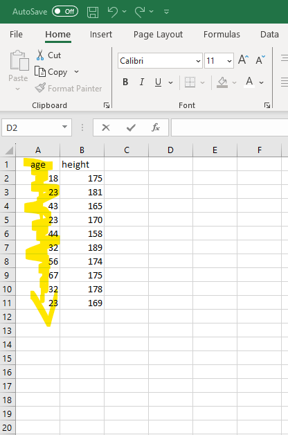
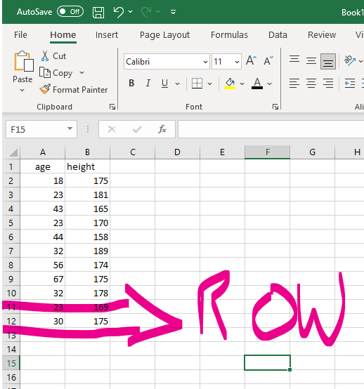

Chapter 3 Basic R Programming (Part I)
Today, we are going to explore fundamental programming concepts in R. By the end of this session, you should be capable of the following:
- Running and troubleshooting commands in the R console.
- Understanding different data types and when to use them.
- Creating and utilizing variables.
- Grasping data structures and how to construct them.
- Loading R packages and utilizing their functions.
3.0.1 Activity 1: Set up your Working Directory
It’s good practice to set your working directory when you first open RStudio. Remember that the working directory is the location where we want to store any resulting data files or scripts that you’ll work on in a session. Last week I showed you how to do this using a button-and-click interface.
Using those instructions, create a folder called “Week2” in the rintro project folder and set it as your working directory. Use the ´getwd()´ to check that it has been set as your working directory. Your output should be something like this:
3.1 Using the Console
In the previous chapter, I made a distinction between the script and the console. I said that the script was an environment where we would write and run polished code, and the R console is an environment for writing and running “dirty” quick code to test ideas, or code that we would run once.
That distinction is kinda true, but it’s not completely true. In reality, when we write a script we are preparing commands for R to execute in the console. In this sense, the R script is equivalent to a waiter. We tell the waiter (script) what we want to order, and then the waiter hands that order to the chef (console).
It’s important to know how to work the R console, even if we mostly use scripts in these workshops. We don’t want the chef to spit into our food.
3.1.1 Typing Commands in the Console
We can command the R console to compute calculations. Remember not to type the operator ´>´ if you are following along in RStudio, this just indicates that R is ready to execute a new command.3
If you are performing calculations in R, it’s important to know that it follows the usual arithmetic convention of order of operations (remember BIMDAS - Bracets, Indices, Multiplication, Division, Addition, and Subtraction?).
Now you’ll have noticed that the output of every line of code we entered starts with a [1] before our actual result. What does this mean?
This is a way for R to label and organize its responses. Imagine you have a conversation with R, and every time you ask it something, it gives you an answer. The square brackets with a number, like [1], are like labels on each response, telling you which answer corresponds to which question. This is R indexing its answer.
In each of the above examples, we asked R a question that only has only 1 answer, which is why the output is always [1]. Look what happens when I ask to print out multiple answers.
print(sleep$extra) #this will print out the extra sleep column in the sleep dataset we used last week## [1] 0.7 -1.6 -0.2 -1.2 -0.1 3.4 3.7 0.8 0.0 2.0 1.9 0.8 1.1 0.1 -0.1
## [16] 4.4 5.5 1.6 4.6 3.4Here R tells us that the first answer (i.e., value) corresponds to 0.1. The next label is [17], which tells us that the 17th answer corresponds to 5.5. The reason that R does this is that R only prints out the index in the console each time it needs to make a new row. This helps us orient ourselves to answers, without adding a lot more data (e.g., if there was an index for every single answer that would double the number of data we were looking at).
We will come back to indexing later in this session. It is an extremely useful concept in R.
3.1.2 Console Syntax (Aka “I’m Ron Burgundy?”)
3.1.2.1 R Console and Typos
One of the most important things you need to know when you are programming, is that you need to type exactly what you want R to do. If you make a mistake (e.g., a typo), R will not try and understand what you actually meant. For example, see what happens if you write the following code:
## Error in 10 = 20: invalid (do_set) left-hand side to assignmentR thinks you making the claim that 10 equals 20. Since this is not true, R panics and refuses to run your command. Now any person looking at your code would guess that since + and = are on the same key on our keyboards, you probably meant to type 10 + 20. But that’s because we have a strong theory of mind, whereas programming languages do not.
So be exact with your code or else be Ron Burgundy?.
On the grand scheme of mistakes though, this mistake is not that costly because R will tell us immediately that something is wrong and stop us from doing anything.
However, there are silent type of mistakes that are harder to solve. Let’s image that you typed in - instead of +.
In this scenario, R will run this code and output the result. This is because the code still makes sense - it is perfectly legitimate to subtract 20 away from 10. R doesn’t know you meant to add 10 to 20. All it can see is three objects 10, -, and 20 in a logical order, so it carries out the command. You’re the leader in this relationship.
In short calculations like this, it’s clear what you typed wrong. But if you run a long-block of connected code and made a typo like this somewhere, the result you get can be significantly different from the intended result and it might be difficult to spot.
The main way to check for this is to always view the output of your code. If it looks significantly different from what you expected, then this type of silent error might be causing it.
I am not highlighting these issues to scare you, it’s just important to know that big problems (R code not running or inaccurate results) can be easily fixed by tiny changes.
3.1.2.2 R Console and Incomplete Commands
I have been pretty mean to the console, but there are rare times it will be a good Samaritan. For example, if R thinks you haven’t finished a command it will print out + to allow you to finish it.
So when you see “+” in the console, this is R telling you that something is missing. If nothing is missing, then this indicates that your code might not be correctly formatted. Overall, the moral of this section can be summarized as: proofread your code!
Okay, that’s a lot about using the console. Let’s move on to other programming concepts.
3.2 Data Types
Our overall goal for this course is to give you the ability to import your data into R, select a subset of the data most of interest for a given analysis, carry out an analysis to summarize these data and create visualizations of the data. But it’s important to consider What is Data and how is it stored in R?
Data comes in many forms: Numbers (Integers and decimal values) or alphabetical (characters or lines of text). R has developed a system for classifying this range of data into different data types.
3.3 Basic Data types in R
R has 4 basic data types that are used 99% of the time:
3.3.1 Character
A character is anything wrapped inside quotation marks. It is often referred to as a string.
Strings can be anything inside single or double quotation marks.
## [1] "character"## [1] "character"Numbers in quotation marks are also recognized as a character type in R.
## [1] "character"## [1] "character"## [1] "numeric"3.3.2 Numeric (or Double)
In R, the numeric data type represents all real numbers, with or without decimal value, such as:
## [1] "numeric"## [1] "numeric"## [1] "numeric"3.3.3 Integer
An integer is any real whole number with no decimal points. We tell R to specify something as an integer by adding a capital “L” at the end.
## [1] "integer"## [1] "integer"## [1] "integer"It might seem weird that R has a separate data type for integers when the numeric/double character type contains integers. Why bother with the separate data type?
The reason is that integers store less space in your computers memory than the numeric or double data type. There’s less information in “33” compared to “33.00”. So if you have a very large dataset (in the millions), and you know for certain the data will only be integer, using the integer data type will save you a lot of storage space.
It’s unlikely that you will need to use integers over numeric/doubles for your own research, but its good to be aware of just in case.
3.3.4 Logical (otherwise know as Boolean)
The Logical Data type has two potential values: TRUE and FALSE.
In programming, we often need to deal with conditions and make decisions based on whether certain conditions are true or false. Did the student pass the exam? Is this p-value below .05?
The Logical data type in R enables us to represent and work with these truth values.
## [1] "logical"## [1] "logical"One thing to note is that it case sensitive, so typing in any of the following will produce errors.
class(True)
Error: object 'True' not found
class(False)
Error: object 'False' not found
class(true)
Error: object 'true' not found
class(false)
Error: object 'false' not foundThe main reason that there are different types of data in programming is that some commands can only be used on particular data types. For instance mathematical operations (+, -, x and /) are only meaningful for numbers.
11.00 + 3.23 #will work
[1] 14.23
11 * 10 #will work
[1] 120
"11" + 3 # gives error
Error in "11" + 3 : non-numeric argument to binary operatorThis is important to know when troubleshooting errors in R. It’s not uncommon that when you download a data set online that a column that should be numeric is actually saved as a character (e.g., the person entering the data might have a mistake in the excel file).
If you wanted to perform a statistical operation on that column (e.g., mean), you would first have to convert it to the numeric data type. You can do this by using the following function
## [1] 22The following functions enable you to convert one data type to another
3.4 Variables
The code we have been using so far has been single-use code. Once we have typed out code, there is nothing else we can do but look at their output. But programming languages enable us to store information to objects called variables.
Variables are labels for pieces of information. If we want to use that information or recall later on, instead of running the same code that produced the information, we can just refer to its label. Let’s say I have a character object that refers to my name. I can save that character object to a variable.
To create a variable, we first type the name of the variable (name). We use the assignment operator to tell R that we will be assigning (i.e., storing) information toname. This information is the string “Ryan”. Once we run this code, then whenever R sees the variablename it will replace it with Ryan.
## [1] "Ryan"Now many of you who have seen my email will think “Hold on a second, isn’t your first name Brendan? You fraud!”. Now before you grab your pitchforks, yes, you are technically correct. Thankfully, we are able to reassign our variable labels to new information.
## [1] "Brendan"All data types can be stored as information to variables.
## [1] 30## [1] 175## [1] FALSEpaste("My name is", name, "I am", age, "years old and I am", height, "cm tall. It is", live_in_hot_country, "that I was born in a hot country")## [1] "My name is Brendan I am 30 years old and I am 175 cm tall. It is FALSE that I was born in a hot country"We can use variables compute calculations with their information. Let’s say I have several variables relating to my scores on five items measuring Extraversion (which I will label with the variable names extra1 to extra5). I can use the variable names to calculate my total Extraversion score.
extra1 <- 1
extra2 <- 2
extra3 <- 4
extra4 <- 2
extra5 <- 3
total_extra <- extra1 + extra2 + extra3 + extra4 + extra5
print(total_extra)## [1] 12## [1] 2.4Variables are an extremely powerful tool in programming that enable us to create code that work across a variety of situations.
3.4.1 What’s in a name? (Conventions for Naming Variables)
There are hard and soft rules for naming variables that you should know.
Hard Rules (Follow these, otherwise R won’t create the variable for you)
Variable names can only include upper case alphabetic characters A-Z, lower-case a-z, numeric characters 0-9, as well period . and underscores _.
Variables names must start with either a letter or a period (1st_name or _1stname is wrong. first_name or .firstname is right)
Do not use spaces in variable names (my name is not okay. Use either my_name or `my.name)
Variable names are case sensitive (my_name is not the same as My_name)
Variable names cannot include special words that R reserves (e.g., if, else, repeat, while, function, for, in, TRUE, FALSE). You don’t need to memories this, but it is worth remembering this if an error with your variable name comes up. After some time, you’ll gain a strong intuition for what is a valid name and what is not.
Soft Rules (you should follow these, otherwise your scripts and code will be messy)
Choose informative variable names that clearly describe the information they represent. Someone should be able to look at your variable name and be able to reasonably guess what type of information it is storing. Variable names like “income”, “grades”, “height” are clear, whereas variables names like “money”, “performance”, or “cm” are ambiguous (e.g., what money - money received, spent, owed? performance on what? what was being measured in cm, height, width?). And for the love of God don’t name your variables “variable1”, “variable2”, “variable3”!
Choose short variable names whenever possible. Concise names like dob or iq are better than date_of_birth or intelligence_quotient. It’s much easier to work with shorter names as it avoids unnecessary and tedious typing thereby reducing the chance for making typos.
But you should choose a long variable name that is clear over a short variable name that is unclear. A long variable name like total_exam_marks is significantly better than a cryptic acronym like tem.
Do not start your variables with a capital letter.4 A standard convention in the R programming language is to use lowercase letters when naming variables or functions. So you could start your variable names with a capital letter, but it would look and sound strange to other R users
Use a conventional naming style and be consistent with it. There are three conventional styles for handling variables that contain multiple words.
The first style separates each word with an underscore (e.g., my_age, my_name, my_height). This is called
Snake_case.The second style separates each word with a period
.(e.g., my.age, my.name, my.height).This is calleddot.notation.The third style capitalizes every additional word after** the first word (e.g., myAge, myName, myHeight). This is called
camelCase.
I recommend that you use the Snake_case during this course, because it will keep your code consistent with my code. Additionally, this case is consistent with other programming languages, whereas dot.notation is not.
Outside of this course, feel free to pick whichever style you prefer. Just be consistent with it.
3.5 Data Structures
So we’ve talked about the different types of data that we experience in the world and how R classifies them. We’ve also talked about how we can store this type of data into variables. But in data analysis, we rarely work with individual variables. Typically we work with large collections of variables that have a particular order. For example, data sets are organised by rows and columns
This also holds true in R, which has several different types of data structures that organise and group together variables. Each data structure has specific rules and methods for creating or interacting with them. I’ll briefly mention each data structure first, before we focus on two main data structures we’ll use in this course: vectors and data frames.
3.5.1 Vectors
The most basic and (probably) important data structure in R are vectors. You can think of vectors as a list of data of R that are of the same data type.
For example, I could create a character vector with names of people in the class.
## [1] "Gerry" "Aoife" "Liam" "Eva" "Owen" "Ciara"## [1] TRUEAnd I can create a numeric vector with their performance on the module.
## [1] 87 91 87 90 88 89And I can create a logical vectors that describes whether or not they like R.
rintro_satisfied <- c(TRUE, FALSE, T, F, F, T) #you can use T or F as shortcuts
print(rintro_satisfied)## [1] TRUE FALSE TRUE FALSE FALSE TRUETechnically, we have been using vectors the entire class. Vectors can have as little as 1 piece of data.
## [1] TRUEActivity: Try create a vector with only integers. Call it “int_vector”. Check whether you have successfully created this vector with the code class(int_vector)
However, we can’t include multiple data types in the one vector. Going back to our numeric grades vector, look what happens when we try mix in grades as characters.
## [1] "87" "A1" "87" "90" "88" "89"R has converted every element within the rintro_marks vector into a character. If R sees an object that is a vector, but sees that its elements belong to different data types, it will try and convert every element to one data type. This is a strict rule in R - a vector can only be created if ever single element (i.e., thing) inside that vector is of the same data type.
If we were to check the class of the rintro_marks, it will show us this conversion
## [1] "numeric"## [1] "character"Remember how I mentioned that you might download a dataset with a column that has numeric data, but is actually recognized as characters in R? This is one scenario where that could happen. The person entering the data might have accidentally entered text into a cell within a data column. When reads this column, it sees the text, and then R converts the entire column into characters.
3.5.1.1 Working with Vectors
We can perform several types of operations on vectors to gain useful information.
Numeric and Integer Vectors
We can run functions on vectors. For example, we can run functions like mean(), median, or sd() to calculate descriptive statistics on numeric or integer-based vectors.
## [1] 88.66667## [1] 88.5## [1] 1.632993A useful feature is that I can sort my numeric and integer vectors based on their scores.
## [1] 87 87 88 89 90 91The sort() function by default arranges from lowest to highest, but we can also tell it to arrange from highest to lowest.
## [1] 91 90 89 88 87 87Character and Logical Vectors
We are more limited when it comes to operators with character and logical vectors. But we can use functions like summary() to describe properties of character or logical vectors.
## Length Class Mode
## 6 character characterThe summary() functions tells me how many elements are in the character vector (there are six names), whereas it gives me a breakdown of results for the logical vector.
3.5.1.2 Vector Indexing and Subsetting
A vector in R is like a list of items. To be more specifc, vectors in R are actually ordered list of items. Each item in that list will have a position (known as its index). When you create that list (i.e., vector), the order in which you input the items (elements) determines its position (index). So the first item is at index 1, the second at index 2, and so on. Think of it like numbering items in a shopping list.
Figure 3.1: Indexing for Numeric Vector
Figure 3.2: Indexing for Character Vector
Figure 3.3: Indexing for Logical Vector
This property in vectors mean we are capable of extracting specific items from a vector based on their position. If I wanted to extract the first item in my list, I can do this by using [] brackets.
## [1] "Gerry"Similarly, I could extract the 3rd element.
## [1] 87Or I could extract the last element.
## [1] NAThis process is called subsetting. I am taking an original vector and taking a sub-portion of its original elements.
I can ask R even to subset several elements from my vector based on their position. Let’s say I want to subset the 2nd, 4th, and 8th elements. I just need to use c() to tell R that I am subsetting several elements.
## [1] "Aoife" "Eva" NA## [1] 91 90 NA## [1] FALSE FALSE NAIf the elements you are positioned right next to each other on a vector, you can use : as a shortcut.
## [1] "Gerry" "Aoife" "Liam" "Eva"It’s important to know however that when you perform an operation on a vector or you subset it, it does not actually change the original vector. For example, if you wanted to save the top three rintro_marks, the following code would not work:
sort(rintro_marks, decreasing = TRUE)
[1] 91 90 89 88 87 87
rintro_marks[c(1, 2, 3)]
[1] 87 91 87
print(rintro_marks)
[1] 87 91 87 90 88 89You can see that neither the sort() function or subsetting actually changed the original vector. They just outputted a result to the R console. If I wanted to actually save their results, then I would need to assign them to a variable label.
Here’s how I would extract and save the top three exam marks.
marks_sorted <- sort(rintro_marks, decreasing = TRUE)
marks_top <- marks_sorted[c(1:3)]
print(marks_top)## [1] 91 90 89Over to you! How could we extract and save the bottom 3 results from the rintro_marks` vector? Give it a go.
Bonus Points: Calculate the mean of both the top 3 marks and bottom 3 marks.
3.6 Vectors - making it a little less abstract.
You might find the discussion of vectors, elements, and operations very abstract. I certainly did when I was was learning R. While the list analogy is helpful, it only works for so long - there’s another data structure called lists (we’ll talk it more next week). That confused me.
But what helped me understand vectors was the realization that a vector is simply a “line of data”. Let’s say I was running a study and collected data on participants age. When I open the excel file, there will be a column called “age” will all the ages of my participants. That column is a vector of data with the variable label “age”.
Creating that vector is the equivalent of creating a column in excel.

Similarly, rows are also lines of data going horizontally. If I add data to columns in Excel to a dataset, I am create a new row (line) of data. In R this is the equivalent of doing this:

So whenever you think of a vector, just remember that it refers to a line of data that would either be a column or a row.
So what happens we combine different vectors (columns and rows) together? We create a data frame.
3.7 Data frames
Data frames is a rectangular data structure that is composed of rows and columns. A data frame in R is like a virtual table or a spreadsheet in excel.

Figure 3.4: The relationship between data frames and vectors. The different colours in the data frame indicate they are composed of independent vectors
Data frames are an excellent way to store and manage data in R because it can store different types data (e.g., character, numeric, integer) all within the same structure. Let’s create such a data frame using the data.frame() function.
my_df <- data.frame(
Name = c("Alice", "Bob", "Charlie"), #a character vector
Age = c(25L, 30L, 22L), #an integer vector
Score = c(95.65, 88.12, 75.33) #a numeric vector
)
my_df## Name Age Score
## 1 Alice 25 95.65
## 2 Bob 30 88.12
## 3 Charlie 22 75.33Once you have created or imported a data frame, you’ll often need to access it and perform various tasks and analyses. Let’s explore how to access data within a data frame effectively.
3.7.1 Selecting Columns
Columns in a data frame represent different variables or attributes of your data. Often in data analysis we want to select a specific column and then perform analyses on it. So how can we individual select columns? We can do so through a variety of tools:
The **\(** Notation: You can use a dollar sign (\)) followed by the column to select a particular column in a data frame. For example, let’s select the Name column in the my_df data frame.
## [1] "Alice" "Bob" "Charlie"Square Brackets: This is similar approach to accessing elements from a vector. Inside the brackets you can specify both the row and columns that you want to extract
In a data frame, every column has a name, similar to how each column in an excel spreadsheet has a header. These columns names enable you to access and manipulate specific columns or variables within your data frame.
Including the “>” is a pain when formatting this book, so I won’t include “>” in examples of code from this point forward.↩︎
This rule is the most “soft”, but it does bear similarity with conventions in spoken languages. For example, German and English native-speakers tend to emphasize time at different points in a sentence. English speakers tend to specify the time at the end of the sentence “I will drive to Dublin on Friday”, whereas German speakers tend to specify time near the beginning of the sentence “I will on Friday drive to Dublin” (Ich werde am Freitag nach Dublin fahren.). Of course, you could say it the German way in English, or the English way in German, but it would sound a bit unnatural.↩︎